About
Shleepy is an application created to relax tensions and stress so that the user can have peaceful and rejuvenating rest. It combines sleep tracking, a curated sound library, a dream journal and meditation courses, to allow a calm space that allows the user to fall asleep quicker and have a better night’s rest
Challenge
Due to the daily challenges of modern living, stress and anxiety have made it especially difficult to get deep sleep and proper rest. How can I clear the mind and deliver a feeling of relaxation that allows the user to fall asleep easier and gain quality rest?
Design System.

For the branding, I choose a dark to light contrast, channeling the influence of dark mode.


Research.
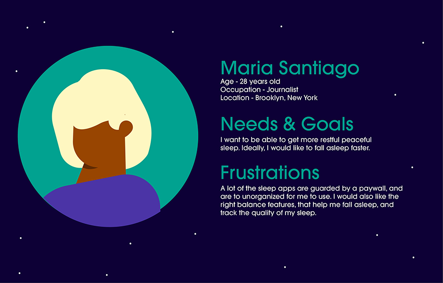 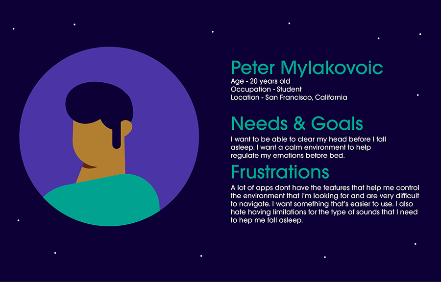 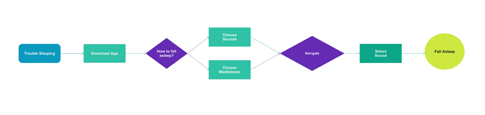
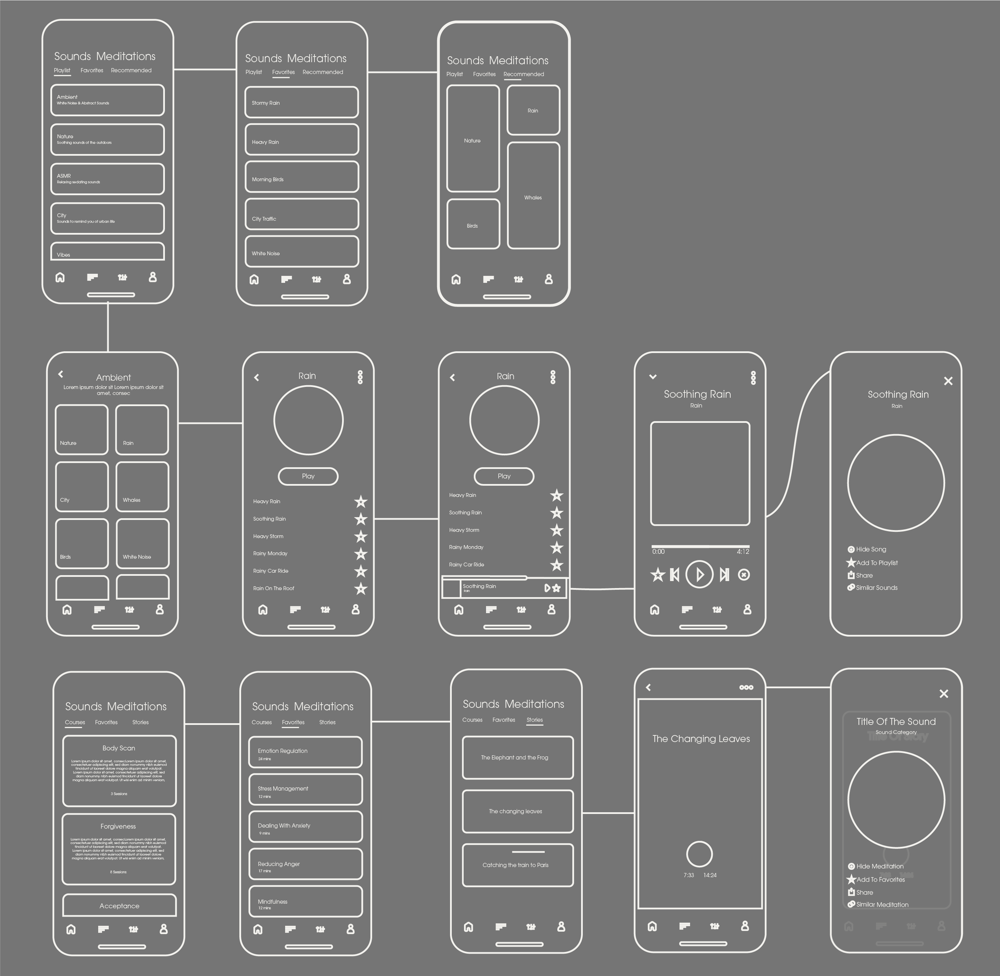
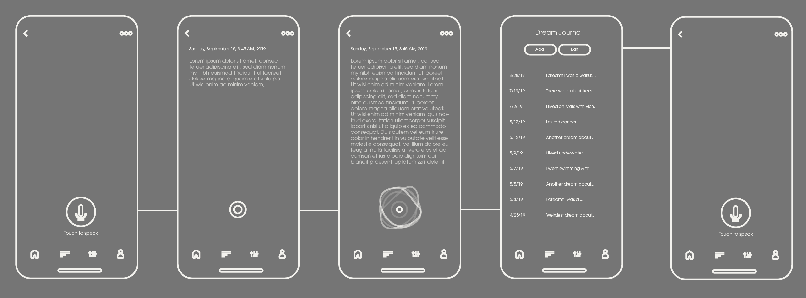
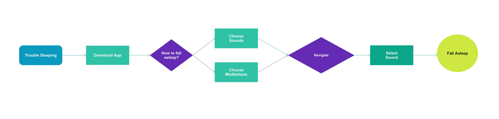
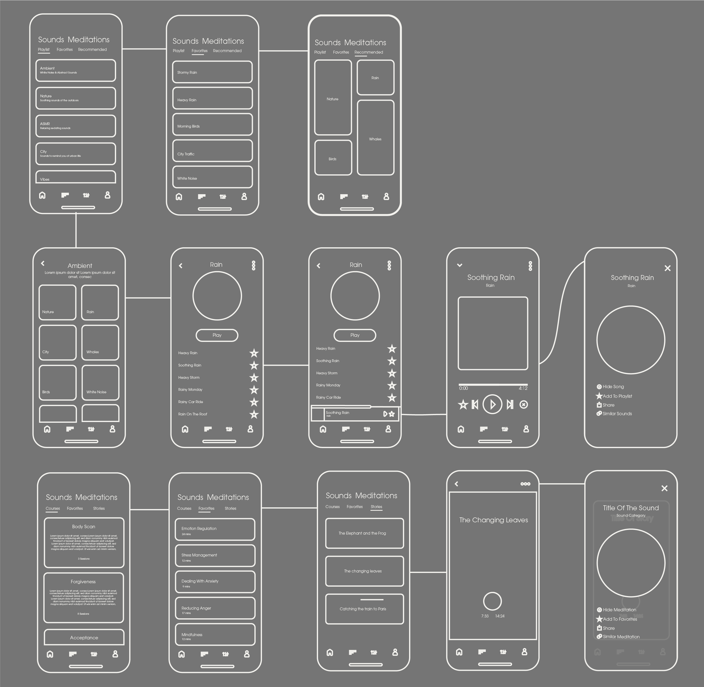
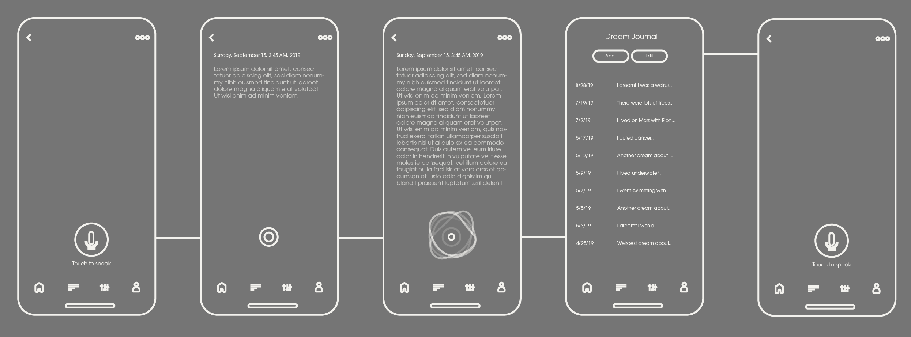
Key Features.
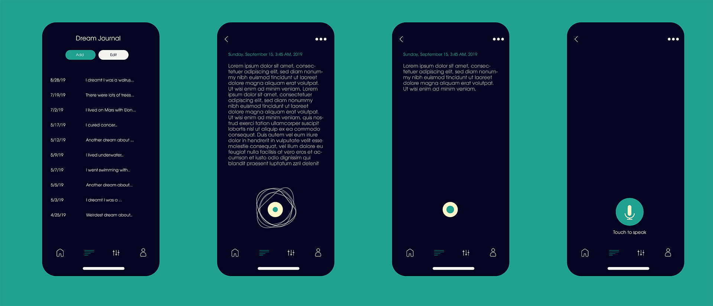Being able to remember your dreams can be difficult, this feature uses audio-to-text technology to convert your dreams into a journal that can be read when the user is awake. The problem here is that typing can be hard when you're very tired and also poses the risk of disturbing your sleep. The solution of audio-to-text allows the user to record their dreams without fully waking up.
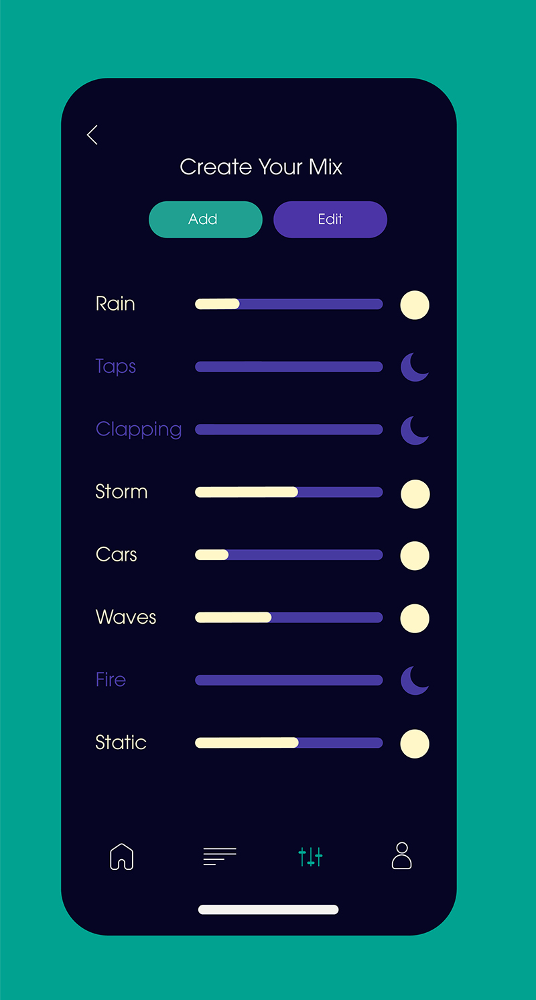Creating a mix is a feature that allows the user to control the combination sounds, to create an atmosphere they find most relaxing
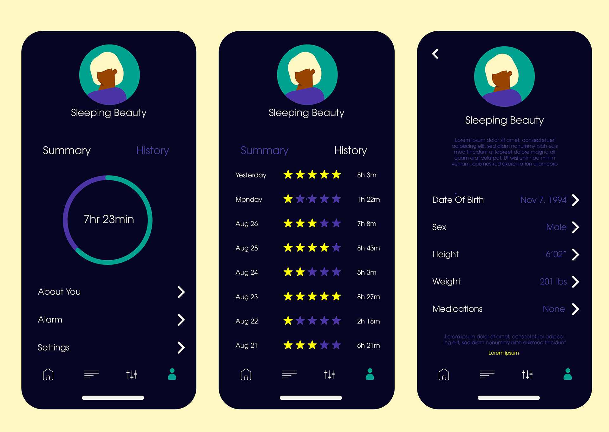sleep tracking measures sleep quality by assessing history, rating your sleep and measuring this data with your medical information.
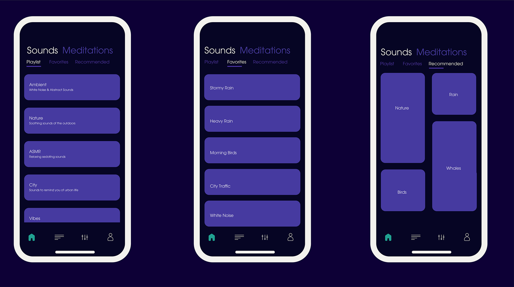Main menu after the splash screen, this section is divided into two parts: Sounds, and Meditation.
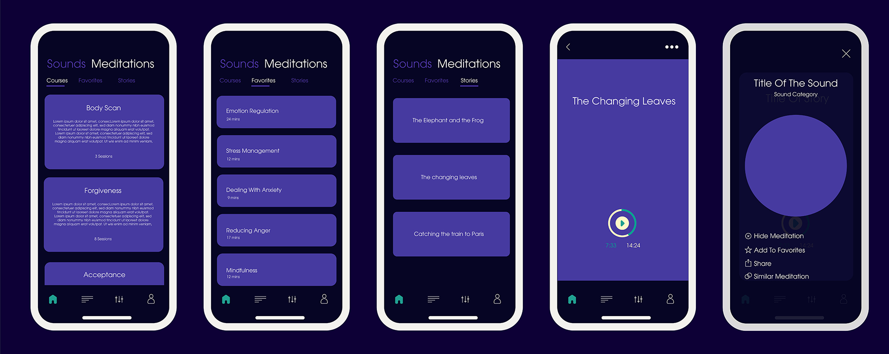 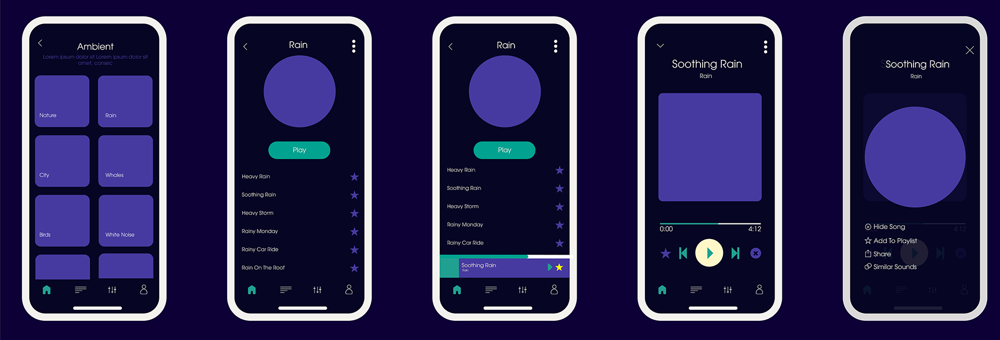This feature is modeled after music apps such as Spotify, while also learning from meditation apps such as HeadSpace and Calm.
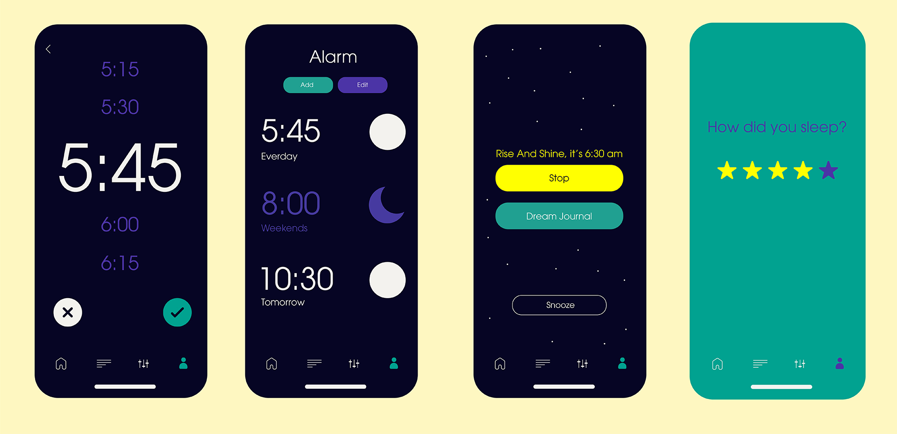